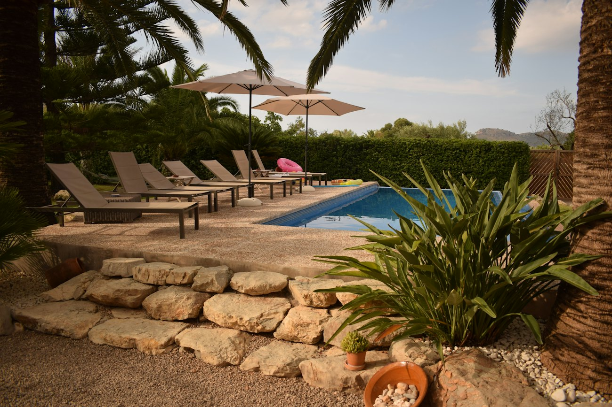

Your trusted contact on the island.
I look after your home in Mallorca while you are away: regular checks, cleaning, preparing your arrival and everything that needs arranging around the house.
- At home in Mallorca since 2023
- One dedicated contact
- Photo report after every visit
Your home is in Mallorca. Most of the time, you are not.
A storm in the night, a dripping tap, an air conditioning unit that no longer starts. From far away, you often only find out when you arrive. Then the holiday begins with phone calls instead of the first coffee on the terrace.
I am the person who checks beforehand. I hold your key, I know your house and I get in touch before a small issue turns into damage. Directly and without detours.

Three things you can rely on
Reliability
Agreed visits take place. After each one you receive a short report with photos, so you see what I have seen.
Cleanliness
I clean the way I expect my own home to be: thoroughly, with an eye for corners, joints and the details you only notice at second glance.
Partnership
You have one dedicated contact instead of changing faces. I tell you honestly what is needed and what is not, and I decide nothing over your head.
Four services for your home
Book what you need: individually or as all-round care from one person.

Home care and regular checks
Regular visits while you are away: airing, checking, spotting problems early.
Learn more
Cleaning
From regular upkeep to deep cleaning, with attention to detail.
Learn more
Arrival and departure service
Your home is ready when you arrive and looked after when you leave.
Learn more
Property service
Keys, tradespeople, deliveries: I coordinate on site what you cannot arrange from afar.
Learn moreFour steps to having your home looked after
From the first conversation to the first check. Clear, personal and without small print.
First contact
You write or call and tell me about your home. The conversation is free and without obligation.
Viewing
I come to see your property, ideally together with you. We go through what matters and what you would like.
Your care plan
You receive a clear quote: which services, how often and at what price. You decide in your own time.
Ongoing care
I take over the keys and begin. After every visit you receive a report with photos.

I am Leoni.
I have lived in Mallorca since 2023 and look after a steadily growing portfolio of properties in the Santanyí area. At the start I was able to take over an existing client base. Since then it has grown through trust and recommendations.
I look after your property as if it were my own. So you can enjoy every moment on the island without a worry.
What owners say
Please note: these testimonials are invented. They show how this section will look and will be replaced by real ones.
“Since Ms Pfadt has been looking after our house, we fly back to Hamburg with peace of mind. After every visit there is a message with photos. That is all we need.”
The B. family, Hamburg · House in Cala Figuera“We arrived and the beds were made, the fridge was stocked and the cushions were out on the terrace. No holiday of ours has ever started like that.”
Sabine and Jörg K., Munich · Finca near Es Llombards“We would not have noticed the water damage in February until Easter. Leoni spotted it during a check, called the plumber and explained everything to us.”
Thomas R., Düsseldorf · House in SantanyíFrequently asked questions
How often do you visit my home?
As often as we agree: weekly, every two weeks or once a month. After severe weather I make an additional visit.
How do I know what happened during a visit?
After every visit you receive a short message with photos, by WhatsApp or email. That way you can see the condition of your home for yourself.
Where are my keys kept?
Your keys are stored securely and marked only with a code, never with a name or address. Nobody gains access to your home without your consent.
What happens in an emergency?
I contact you immediately, secure whatever can be secured and agree the next steps with you. Larger expenses are always your decision.
Carefree ownership starts with a message.
Tell me about your home. You will receive a quote that fits your property and the times you are away. No obligation, and personal.